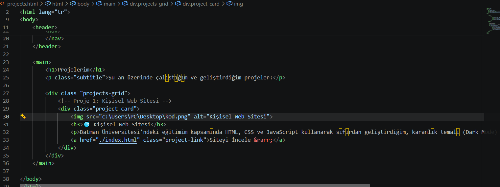

Projelerim
Şu an üzerinde çalıştığım ve geliştirdiğim projeler:

🌐 Kişisel Web Sitesi
Batman Üniversitesi'ndeki eğitimim kapsamında HTML, CSS ve JavaScript kullanarak sıfırdan geliştirdiğim, karanlık temalı (Dark Mode) ve dinamik kişisel portfolyo sitem.
Siteyi İncele →